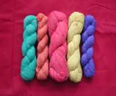
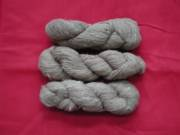
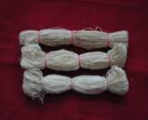

By-products and their use
The main object of tasar silk industry
is to produce cocoons by rearing the silkworms and produce raw silk from
which different varieties of silk fabrics are produced. In order to achieve this
objective, different stages viz.
rearing, reeling, twisting, spinning and weaving are inevitable. During the
different stages, a lot of unwanted materials are left out and are being
utilized in the industry. The appreciable returns from these by-products help
to keep the end products at competitive level by lowering the cost of
production. It is a well known fact that pupae which are obtained after
reeling the tasar cocoons are rich in protein, oil, carbohydrate and
minerals. Literature available on the subject reveals the following:
Utilization of pupal oil:
Pupal oil
from A. mylitta is suitable for
manufacture of soap. The saponification value of the oil is comparable to the
ISI specification for Mahua oil. The samples of the soap were prepared at laboratory
level with pupal oil. The use of pupal oil has a distinct industrial value.
Utilization of protein powder:
The oil-free
pupae powder, which contains 80% protein, is being utilized in preparing
protein rich biscuits with fairly good physical appearance and good taste.
Large scale manufacturing for commercial exploitation is needed.
Utilization of pupae as poultry feed: As the pupae are rich in protein, carbohydrate and minerals, these are
being utilized as poultry feed & needs
popularization for commercial exploitation.
Among the tasar cocoons, the cut,
defective, flimsy and double cocoons
and silk waste obtained during reeling operations can be suitably used for
conversion into spun yarn. Depending
on the source and different forms of silk waste, it is classified as: Cocoon waste, Reeling waste, Thread waste
and Peduncle waste. These by-products
are utilized for spinning and spun yarn is being produced and utilized for
various purposes.
Cocoon waste: Discarded cocoons are not suitable for
reeling are called cocoon waste. This comprises of cocoons infested with
insects, thin or flimsy, double, deformed, cut and pierced cocoons etc.
Reeling waste: The reeling waste constitutes
deflossing waste, reeling waste and basin waste. The reeling waste
constitutes nearly 30-40% of silk fibre in the cocoon.
Thread reeling waste:
Thread
reeling waste consists of all bits of yarn obtained during knotting and
cleaning in various stages of silk yarn or fabric production. This waste is
required to be opened by mechanical spinning machine for its re-utilization.
Peduncle waste: A sizeable quantity of silk waste is
obtained from cocoon peduncles, which are cut and separated before cooking of
cocoons for reeling purpose. These peduncles after degumming get converted
into peduncle silk waste.
Spun yarn: Spun yarn is produced by combining the
processes of drawing, twisting and winding operation. In tropical tasar
industry, 4 types of spun yarn viz.,
Ghicha, Katia, Jhuri and Balkal are produced.
|

|

|

|
Ghicha: Traditionally
produced tasar yarn from unreelable cocoons by drafting out silk filament and
giving false twist just to bind the filament by rubbing on inverted earthen pitcher
and subsequently wound on to the swift to form the hank.
Katia: A lump of degummed
and open tasar reeling waste is drafted by hand. Twist is giving to the
strand by rotating the spindle “Takli.” The yarn is formed subsequently wound
on to the spindle and then into hank.
Jhuri: The kind of yarn
spun from uncleaned and unopened tasar waste like ghicha.
Balkal yarn: Balkal yarn is
produced from peduncles and waste on
Ambar charkha i.e. size spindle operated charkha.
Core spun: Recently, utilization
of waste for preparation of core spun and fancy spun yarn are being carried
out. These yarns are produced by hand appliances viz., hand spinning/motorized spinning machines.
Back
|